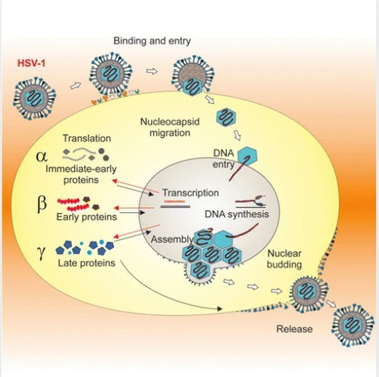
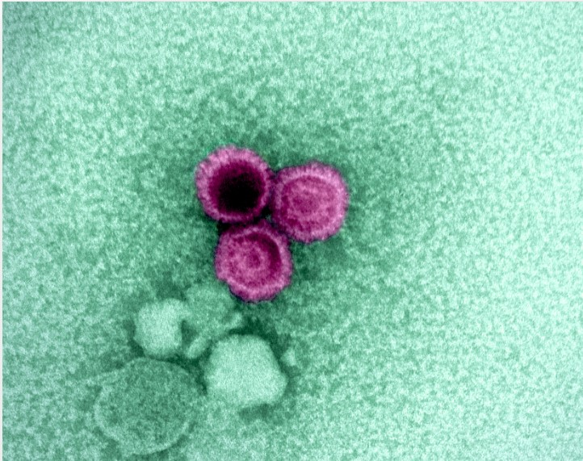
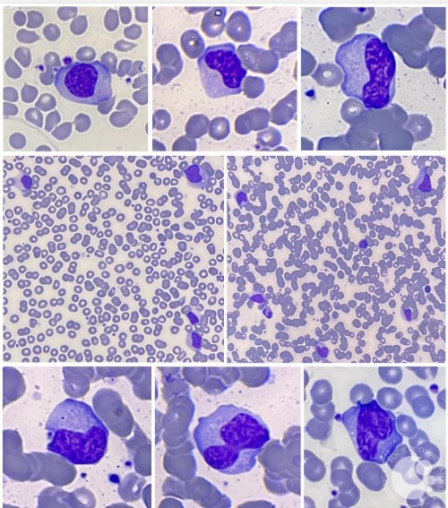
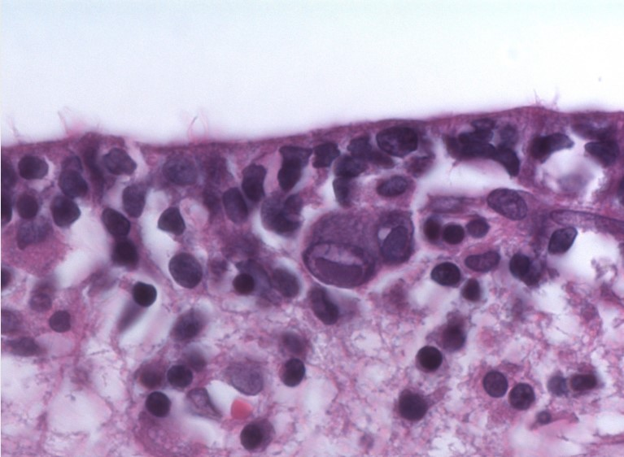

Ερπητοϊοί – δομημένες αναλυτικές σημειώσεις
με έμφαση σε EBV και CMV
Η λογική είναι: πρώτα ο κοινός μηχανισμός των ερπητοϊών, μετά ο EBV, μετά ο CMV, και στο τέλος μία καθαρή σύγκριση EBV vs CMV.
Οικογένεια
Herpesviridae
Γονιδίωμα
δίκλωνο DNA
Θέση πολλαπλασιασμού
πυρήνας
Κεντρικό χαρακτηριστικό
λανθάνουσα παραμονή
1. Υποοικογένειες ερπητοϊών
Οι ερπητοϊοί χωρίζονται κλασικά σε 3 υποοικογένειες ανάλογα με τον ρυθμό ανάπτυξης και τον κυτταρικό τους τροπισμό.
- Α: ταχεία ανάπτυξη, παραμονή κυρίως σε αισθητικά γάγγλια → HSV-1, HSV-2, VZV
- Β: βραδεία ανάπτυξη, πολλαπλές εντοπίσεις → CMV, HHV-6, HHV-7
- Γ: ανάπτυξη σε λεμφοβλάστες/λεμφοκύτταρα → EBV, HHV-8
2. Τι πρέπει να θυμάσαι για όλους τους ερπητοϊούς
- Είναι ιοί DNA, συγκεκριμένα dsDNA.
- Ο πολλαπλασιασμός τους γίνεται κυρίως στον πυρήνα.
- Έχουν 3 φάσεις γονιδιακής έκφρασης:
- Immediate early → ρύθμιση των υπολοίπων γονιδίων
- Early → ένζυμα για αντιγραφή DNA
- Late → δομικές πρωτεΐνες καψιδίου και περιβλήματος
- Έχουν ικανότητα λανθάνουσας λοίμωξης, άρα μπορούν να παραμένουν στο σώμα για χρόνια.
3. Μνημονικό σκελετό
Ερπητοϊός = μπαίνει, γράφει, μένει, ξαναξυπνά.
- Μπαίνει στο κύτταρο
- Γράφει τα γονίδιά του σε 3 φάσεις
- Μένει λανθάνων
- Ξαναξυπνά όταν ευνοηθεί από stress ή ανοσοκαταστολή
4. Κοινός πολλαπλασιασμός ερπητοϊών – βήμα προς βήμα
Ο πολλαπλασιασμός των ερπητοϊών έχει συγκεκριμένη λογική αλληλουχία. Αν την καταλάβεις, θυμάσαι πολύ πιο εύκολα και τα επιμέρους σημεία των HSV, EBV, CMV κτλ.
Ο ιός προσκολλάται σε υποδοχείς της κυτταρικής μεμβράνης.
Το ιικό envelope συντήκεται με τη μεμβράνη του κυττάρου.
Το νουκλεοκαψίδιο μπαίνει στο κύτταρο και μεταφέρεται προς τον πυρήνα.
Immediate early → early → late.
Το καψίδιο σχηματίζεται στον πυρήνα, ο ιός αποκτά περίβλημα από πυρηνική μεμβράνη και τελικά απελευθερώνεται.
5. Εικόνες κατανόησης




6. Epstein–Barr virus (EBV / HHV-4) – βασική ιδέα
Ο EBV ανήκει στην υποοικογένεια Γ και έχει ιδιαίτερη αγάπη για τα Β-λεμφοκύτταρα. Εισέρχεται σε αυτά μέσω του υποδοχέα CD21.
- Δεν κάνει απλώς λοίμωξη: ενεργοποιεί τα Β-κύτταρα.
- Μιμείται σήματα ενεργοποίησης, άρα τα Β-κύτταρα πολλαπλασιάζονται και δεν πεθαίνουν εύκολα.
- Μετά την είσοδο, υπάρχουν δύο πιθανοί δρόμοι:
- Λυτικός κύκλος → παραγωγή νέων ιών
- Λανθάνουσα λοίμωξη → το ιικό DNA παραμένει ως κυκλικό επίσωμα (episome) στον πυρήνα
7. Πορεία λοίμωξης από EBV
- Μόλυνση επιθηλιακών κυττάρων του ρινοφάρυγγα.
- Τοπικός πολλαπλασιασμός → φαρυγγίτιδα.
- Απελευθέρωση στο σάλιο → μετάδοση ως “kissing disease”.
- Προσβολή Β-λεμφοκυττάρων μέσω CD21.
- Πολυκλωνική ενεργοποίηση Β-κυττάρων → παραγωγή ετερόφιλων αντισωμάτων.
- Τα μολυσμένα Β-κύτταρα εκφράζουν ιικές πρωτεΐνες στην επιφάνειά τους.
- Ενεργοποιούνται CD8+ Τ-κύτταρα που τα καταστρέφουν.
- Η έντονη ανοσολογική απάντηση οδηγεί σε λεμφαδενοπάθεια, σπληνομεγαλία, ηπατομεγαλία.
8. Τι είναι τα άτυπα λεμφοκύτταρα;
Στη λοιμώδη μονοπυρήνωση βλέπουμε στο αίμα τα λεγόμενα άτυπα λεμφοκύτταρα ή Downey cells.
- Δεν είναι τα μολυσμένα Β-κύτταρα.
- Είναι κυρίως ενεργοποιημένα Τ-λεμφοκύτταρα που αντιδρούν εναντίον των μολυσμένων Β-κυττάρων.
- Λέγονται “άτυπα” γιατί έχουν μεγάλο μέγεθος, άφθονο κυτταρόπλασμα και ακανόνιστο σχήμα.
9. Αντιγόνα EBV – πώς να τα βάλεις σε σειρά
| Δείκτης | Τι σημαίνει | Πότε εμφανίζεται | Κλινική αξία |
|---|---|---|---|
| VCA-IgM | Αντισώματα κατά του καψιδικού αντιγόνου | Πρώιμα | Δείχνει οξεία πρόσφατη λοίμωξη |
| VCA-IgG | Αντισώματα κατά του καψιδικού αντιγόνου | Λίγο μετά το IgM | Παραμένει για χρόνια/δια βίου → δείχνει έκθεση |
| EA | Early antigen | Νωρίς στην ενεργό λοίμωξη | Υποδηλώνει ότι ο ιικός πολλαπλασιασμός έχει αρχίσει |
| EBNA | Πυρηνικό αντιγόνο του EBV | Αργότερα | Συνδέεται με παλιά/λανθάνουσα λοίμωξη |
| LMP | Latent membrane protein | Λανθάνουσα φάση | Μιμείται σήματα ανάπτυξης, συμβάλλει σε καρκινογένεση |
10. Λοιμώδης μονοπυρήνωση από EBV
Η λοιμώδης μονοπυρήνωση είναι ουσιαστικά η κλινική έκφραση της έντονης ανοσολογικής αντίδρασης που προκαλεί ο EBV.
Κύρια συμπτώματα
- Πυρετός
- Φαρυγγίτιδα / αμυγδαλίτιδα
- Λεμφαδενοπάθεια
- Σπληνομεγαλία
- Κακουχία / κόπωση
Εργαστηριακά
- Λευκοκυττάρωση με λεμφοκυττάρωση
- >10% άτυπα λεμφοκύτταρα
- Αύξηση ηπατικών ενζύμων
- Ετερόφιλα αντισώματα θετικά (Monospot / Paul-Bunnell)
11. Παγίδες στις εξετάσεις για EBV
- Αν δοθεί αμπικιλλίνη ή αμοξυκιλλίνη σε ασθενή με EBV, εμφανίζεται συχνά έντονο εξάνθημα.
- Η σπληνομεγαλία σημαίνει κίνδυνο ρήξης σπληνός.
- Οι πλάκες στις αμυγδαλές μπορεί να θυμίζουν στρεπτοκοκκική φαρυγγίτιδα.
- Το Monospot μπορεί να είναι αρνητικό νωρίς, οπότε βοηθά το VCA-IgM.
- Μπορεί να δεις ήπια θρομβοπενία ή σπανιότερα αιμολυτική αναιμία.
12. Γιατί ο EBV συνδέεται με καρκινογένεση;
Ο EBV μπορεί να συμβάλει σε ογκογένεση επειδή:
- το LMP μιμείται σήματα ανάπτυξης και επιβίωσης,
- το EBNA επηρεάζει την κυτταρική γονιδιακή έκφραση,
- ο ιός οδηγεί σε συνεχή πολλαπλασιασμό Β-κυττάρων.
Νεοπλάσματα/καταστάσεις που σχετίζονται
- Λέμφωμα Burkitt
- Καρκίνος ρινοφάρυγγα
- Λέμφωμα Hodgkin
- Ορισμένα Non-Hodgkin λεμφώματα
- NK/T-cell λεμφώματα, κυρίως σε ανοσοκαταστολή
- Post-transplant λεμφοϋπερπλασία
- Στοματική λευκοπλακία σε HIV
- Καρκίνος του στομάχου
13. Κυτταρομεγαλοϊός (CMV / HHV-5) – βασική ιδέα
Ο CMV ανήκει στην υποοικογένεια Β. Είναι επίσης dsDNA ερπητοϊός, αλλά σε αντίθεση με τον EBV έχει πιο πλατύ κυτταρικό τροπισμό.
- Κάνει λανθάνουσα λοίμωξη και παραμένει ως κυκλικό επίσωμα στον πυρήνα, ιδιαίτερα σε μονοκύτταρα.
- Μπορεί να μολύνει μονοκύτταρα/μακροφάγα, ενδοθηλιακά κύτταρα, επιθηλιακά κύτταρα, ινοβλάστες και άλλους ιστούς.
- Χαρακτηριστικό μορφολογικό εύρημα είναι τα κύτταρα με εμφάνιση “owl’s eye”.
14. Τι σημαίνει “owl’s eye”;
Το “owl’s eye” είναι η ιστολογική εικόνα μολυσμένου κυττάρου από CMV με:
- μεγάλο πυρήνα,
- πυκνό ενδοπυρηνικό έγκλειστο,
- και γύρω του ανοιχτόχρωμη άλω.
Ονομάζεται έτσι επειδή ο πυρήνας θυμίζει το μάτι κουκουβάγιας.
15. Μετάδοση CMV
Ο CMV μεταδίδεται με σωματικά υγρά και γενικά έχει ευρεία διασπορά.
- Σάλιο
- Αίμα / μεταγγίσεις
- Μεταμόσχευση οργάνων
- Σεξουαλική επαφή
- Ούρα
- Κάθετα από μητέρα σε έμβρυο
16. Πρωτοπαθής λοίμωξη και επανενεργοποίηση CMV
Πρωτοπαθής λοίμωξη
- Συνήθως ασυμπτωματική ή ήπια
- Μπορεί να μοιάζει με μονοπυρήνωση αλλά χωρίς ετερόφιλα αντισώματα
Επανενεργοποίηση
- Συχνά ασυμπτωματική σε ανοσοεπαρκείς
- Μπορεί να γίνει σοβαρή σε AIDS, μεταμοσχευμένους και γενικά ανοσοκατασταλμένους
17. Θεραπεία CMV
- Ganciclovir
- Foscarnet
Τα φάρμακα αυτά χρησιμοποιούνται κυρίως όταν η λοίμωξη είναι σοβαρή, ιδιαίτερα σε ανοσοκαταστολή ή σε σημαντική συγγενή/νεογνική νόσο.
18. Συγγενής CMV – το πιο σημαντικό κλινικό κομμάτι
Η συγγενής λοίμωξη από CMV είναι η πιο συχνή συγγενής λοίμωξη. Είναι ιδιαίτερα σημαντική γιατί μπορεί να προκαλέσει σοβαρές βλάβες στο έμβρυο και στο νεογνό.
Τι πρέπει να ξέρεις
- Ο κίνδυνος για το έμβρυο είναι μεγαλύτερος όταν η μητέρα έχει πρωτοπαθή λοίμωξη στην κύηση.
- Περίπου 35–50% των εμβρύων μπορεί να μολυνθούν σε πρωτοπαθή μητρική λοίμωξη.
- Πολλά νεογνά είναι αρχικά ασυμπτωματικά, αλλά μπορεί αργότερα να εμφανίσουν προβλήματα.
Πιθανές εκδηλώσεις
- Μικροκεφαλία
- Ενδοκράνιες ασβεστώσεις
- Ηπατοσπληνομεγαλία
- Ίκτερος
- Πετέχειες / “blueberry muffin”
- Κώφωση
- Χοριοαμφιβληστροειδίτιδα
- Καθυστέρηση ανάπτυξης
19. EBV vs CMV – καθαρή σύγκριση
| Χαρακτηριστικό | EBV | CMV |
|---|---|---|
| Κύτταρο-στόχος | Β-λεμφοκύτταρα μέσω CD21 | Μονοκύτταρα/μακροφάγα και πολλά άλλα κύτταρα |
| Σύνδρομο μονοπυρήνωσης | Συνήθως εντονότερο | Συνήθως ηπιότερο |
| Φαρυγγίτιδα / λεμφαδενοπάθεια | Πιο έντονα | Λιγότερο χαρακτηριστικά |
| Ετερόφιλα αντισώματα | Θετικά | Αρνητικά |
| Άτυπα λεμφοκύτταρα | Συνήθως >10% | Συνήθως <10% |
| Ηπατικά ένζυμα | Μεγαλύτερη αύξηση | Μικρότερη αύξηση |
| Χολερυθρίνη | Μπορεί να αυξηθεί | Συνήθως όχι |
| Ειδικό μεγάλο κλινικό βάρος | Καρκινογένεση / μονοπυρήνωση | Συγγενής λοίμωξη / ανοσοκαταστολή |
20. Τι να λες προφορικά για τον EBV
“Ο EBV είναι γ-ερπητοϊός που προσβάλλει κυρίως Β-λεμφοκύτταρα μέσω CD21. Προκαλεί πολυκλωνική ενεργοποίηση Β-κυττάρων, ενώ τα άτυπα λεμφοκύτταρα που βλέπουμε στο αίμα είναι ενεργοποιημένα Τ-κύτταρα. Κλινικά προκαλεί λοιμώδη μονοπυρήνωση και σχετίζεται με διάφορα νεοπλάσματα.”
21. Τι να λες προφορικά για τον CMV
“Ο CMV είναι β-ερπητοϊός με ευρύ τροπισμό, κάνει λανθάνουσα λοίμωξη κυρίως σε μονοκύτταρα και δίνει κύτταρα ‘owl’s eye’. Είναι ιδιαίτερα σημαντικός σε ανοσοκαταστολή και αποτελεί την πιο συχνή συγγενή λοίμωξη.”
22. Υπερσύντομη αποστήθιση
- EBV → B cells, CD21, Monospot+, atypical T cells, cancer
- CMV → owl’s eye, Monospot−, congenital infection, Ganciclovir
23. Πηγές που χρησιμοποιήθηκαν για τη σύνθεση
Βασικό περιεχόμενο σημειώσεων:
- Εσωτερικό υλικό 2: ΙΙ ΕΡΠΗΤΟΪΟΙ ΙΙ.pdf
- Online εικόνα 1: Wikimedia Commons – HSV life cycle diagram
- Online εικόνα 2: Wikimedia Commons – Electron micrograph of EBV particles
- Online εικόνα 3: ASH Image Bank – atypical lymphocytes in infectious mononucleosis
- Online εικόνα 4: Wikimedia Commons – CMV owl’s eye inclusions